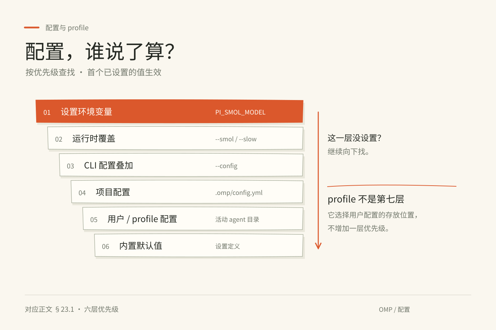
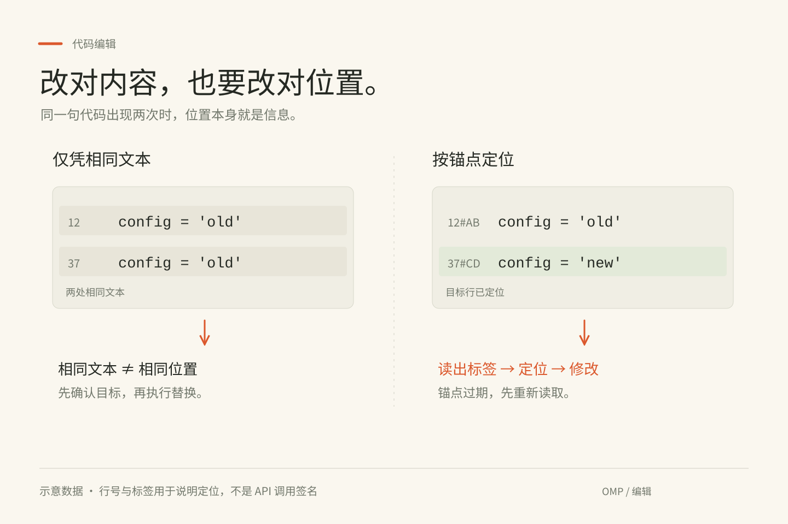
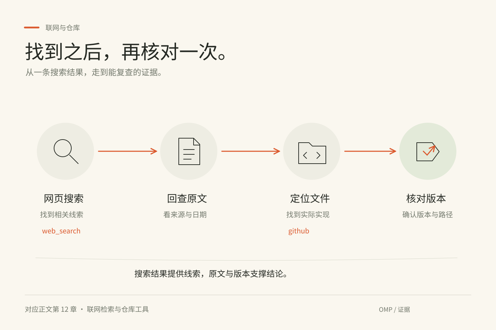

<!doctype html><html lang="zh-CN"><meta charset="utf-8"><meta name="viewport" content="width=device-width, initial-scale=1"><title>OMP · 插画重绘样张</title><style>*{box-sizing:border-box}body{margin:0;background:#EAE8E0;color:#252923;font:16px/1.7 "Microsoft YaHei",sans-serif}main{max-width:1120px;margin:70px auto;padding:0 28px}h1{font-size:34px;margin:0}p{color:#72786C;margin:12px 0 38px}figure{margin:0 0 48px}img{display:block;width:100%;box-shadow:0 12px 36px #25292312;border:1px solid #d6d7c9}figcaption{display:flex;justify-content:space-between;padding:16px 2px;font-size:14px}a{color:#B94520;text-underline-offset:5px}</style><main><h1>OMP · 三张矢量重绘样张</h1><p>可编辑 SVG。以 handraw-style 的图型与配色为设计参考，实际图形由代码绘制；并非 AI 位图生成。</p><figure><figcaption><span>配置 · 层级关系</span><a href="config-precedence.svg">打开 SVG 原图</a></figcaption></figure><figure><figcaption><span>编辑 · 左右对比</span><a href="anchored-edit.svg">打开 SVG 原图</a></figcaption></figure><figure><figcaption><span>证据 · 四步流程</span><a href="source-verification.svg">打开 SVG 原图</a></figcaption></figure></main></html>
